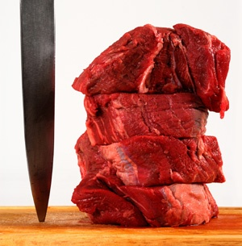
吃肉的危险
冯冯
Wlzf / 誊录
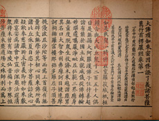佛陀在楞严经时已经指出：众生同源，同是兄弟姊妹父母子女亲眷，不应相吃其肉。佛又指出，食肉断慈悲种子，为慈悲故，不应食肉。食肉之人，果报循环，己肉将被食；食肉之人，难成正果……凡此种种，佛陀均已详尽开示，主张学佛可以吃肉之人，应该深入佛经。
佛陀在说法时，亦指出肉类多传染病，多有“细虫”（病菌），食肉会多病痛（请参阅楞严经，大乘入楞伽经，楞伽经等原文）。可是，现代人很多仍然不信肉类是很多疾病之源，纵然看过了无数的医学报告，他们还是不信。
本文撮要地谈谈肉食的害处，所采用的资料，都是从医学报告上摘取的，并非杜撰。
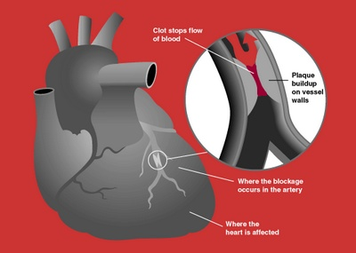（一）吃肉易得心脏病
美国每年至少有一百万人患心脏病，其中六十多万人不治死亡。美国的心脏病研究委员会研究报告指出，这些心脏病患者，大多数是由于吃肉太多及动物脂肪摄取太多，熏肉、牛排、牛肉饼、火腿、羊肉、鸡肉、火鸡肉、三文鱼……等等，使得人体血液中的胆固醇与饱和性脂肪、游离脂肪积存太多，造成动脉硬化与心脏病。从过多肉食引起的心脏病，与抽烟喝酒引起心脏病，同样是头号杀手！
该会指出，血内含胆固醇高于两百六十毫克者，罹患心脏病而致命的比例是胆固醇低于两百毫克的人的四倍！吃肉的人，心脏病突发是素食者的六至八倍！在某些地区，肉食的人心脏病死亡者，是素食者的十倍以上！如果吃肉，再加上喝酒、抽烟、心脏病死亡率就更高，有些统计说是素食者的二十倍，有些统计高达三十倍！
肉类之中，所含饱和脂肪与胆固醇最高者，当数牛羊肉、猪肉、火鸡肉、鸡肉、牛脑、猪脑、牛肝、猪肝等等为甚！（详细请参阅天华公司出版拙着“天眼慧眼法眼的追寻”一书内“高血压与心脏病──吃肉者的现世果报”，此处不赘。）螃蟹、龙虾……等海鲜的胆固醇亦很高，鱿鱼、海参等软体海产，胆固醇也高。
（二）进补等于自杀
所谓吃肉“进补”，其实是慢性自杀！
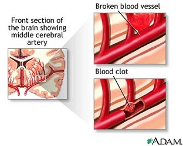温哥华某中文报，数年前刊出一封读者投稿，作者是一位家庭主妇，她很沉痛地写出“进补”害死了她的父亲。她说，费了十多年时间，千辛万苦，好不容易才将她的父亲从中国大陆接出来，到了温哥华团聚。在大陆上苦够饿够的人，一到了加拿大，看见肉类那么便宜，鸡更便宜，就拼命吃肉进补，作为补偿，并且要求女儿给他吃熊掌，好好的大补一番。孝顺的女儿就炖了熊掌给父亲吃，还有什么大陆出产的补酒，谁料到她父亲吃了熊掌与补酒的次夜就突然中风，急送医院也救不了，他的脑血管爆了，当夜死亡。这个女儿哀痛欲绝，写了那篇文章，登在报上，悔恨自己叫父亲进补，她说，若不是给父亲吃熊掌等补品，父亲就不会血管爆裂而死。她说她后悔极了，她写文章来自责，并且希望引起社会的注意，勿再以肉食来孝敬老人进补。她的文章，不用说，并未引起大众普遍的注意。
温哥华唐人街的肉食店，二十年前，只有十三家，现在增到两百多家，烤牛、烤猪、烤鸡、烧鸭、卤猪肝……每天销售以百万元计，牲口被杀被吃掉的，每天以万头计，新来的移民，有钱，讲究吃，拼命享受肉类和进补。温哥华二十年前只有五家店卖补品、补酒，现在，参茸行开了一百多家，生意空前兴隆！大陆参茸，不管多么昂贵，也还是供不应求！
温哥华的大小公私医院，越来越多心病与癌症病人，其中又以华人患者人数急增，已渐渐追上白人的病例人数！若以人口比例来计算，则华人罹患心脏病、中风、癌症的比率比白人还高，因为华人吃肉饮酒已渐渐超过白人的消耗量（华人比较有钱，而且讲究进补）。我就亲眼见过一个土生的华裔八岁男孩，一口气吃了十二只炸鸡腿，还意犹未足！很多华人自豪地一顿吃了一只烤鸭，白人很少负担得起，也很少有这样的“大肚皮”白人是吃了一块煎牛排，一只炸鸡腿，就很够了，而他们的心脏病患者，高血压、中风等等病例，也那么高！华人的患病比率，就可想而知了！
（三）吃肉易得癌症
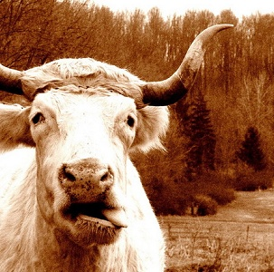我每天接到美加地的电话，来向我求诊求救的华人病人，最多的是癌症，次为心脏病。每夜总有十多个这种危急病人或其家属，请求我用“神力”救命！其实，我哪有什么“神力”？我有的只是日常的预防素食，他们又不爱听，到了病入膏盲，才来找我，我哪有本事救命？病人之中，不少是至死不悟的，宁可病急乱投医，吃那些未经医学化验证明的什么大陆草药偏方，也不肯接受我的素食建议，有些人临危还给喂肉汤、补品！
肉类除了含有太高胆固醇与饱和脂肪外，还会产生太多尿酸与其它毒素。动物在被屠宰，作生死挣扎，细胞就会产生激素，化学性相当高，它在极端恐惧与含恨之中，所产生的化学性激素，加上细胞所未排出的废物，与死亡后尸体腐化所形成的毒素，都是对人体健康有毒害的。
尿素太多，会引起许多疾病，这已是一般常识。肉类所含的毒素，随便举例来说，有苯基嘌呤（Benzapyrene）与甲基胆非（Methylene），这两种都是致癌物质（香烟内也含有苯基嘌呤）！
医学实验证明，用很少量的苯基嘌呤喂白老鼠，初次被白老鼠的体素抵抗而消灭，但连续喂与苯基嘌呤，白老鼠就得了胃癌与白血癌，骨髓等癌症，导致死亡！
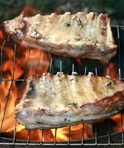肉类，尤其是烤牛肉，形成的毒素PAH（Polycyclic Aromatic，Hydrocarbons），业经很多医学专家指出是与癌症引发有关连的，爱吃烤肉、烤鸡、烤鸭的人，患各种癌症的机会是比不吃肉的人多得多！
有些动物在被屠宰时，已经身患癌瘤，它的癌瘤病毒，存在于它的肉、内脏及血液的细胞之中，人吃了它们，就是把癌毒往自己的肚里吞！而癌毒与有些形成疾病的病毒，是不受普通的烹、煮、油炸、烧、烤的温度的有消灭的。换言之，人若吃了它，就很有可能得到癌症或其它恶疾的。
还有，烹制肉类所使用的各种化学剂。例如，中国腊肉、腊鸭用的硝（Nitrates类），西餐用的使牛排软化的粉（Meat-Tenderizer）、酒精（威士忌、白兰地、康那克……等烈酒）与肉类结合后，都可能形成致癌物质。看一看医学研究报告开列的肉类致癌物质，竟有二三十种之多！那些化学名词，看都看不懂，念也念不出来，这里也无法一一列出及翻译了，只好通称之为肉类所含的致癌物质（Carcinogens from Meat），您去请教医学家及化学家，他们有专业的深入研究，会给您详尽的答案。
当然，肉类所含的毒素，与它因烤、炸，及配料化学剂所结合生成的毒素，不只上述这一些，还有很多已经化验证实的致癌物质，也还有很多被怀疑的未经证实的。
患有癌瘤的猪、牛、鸡、鸭越来越多，这是因为现在的饲主大多数希望早日养肥了牲口，早些上市赚钱，于是就饲以种种化学剂或荷尔蒙，使动物生长得又快又肥，于是出现“打针鸡”、“打针猪”、“打针牛”。
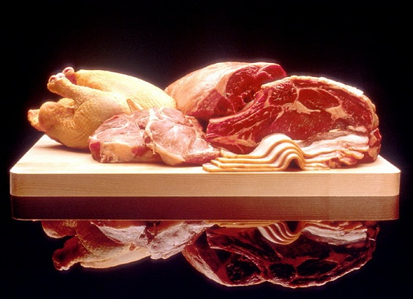 以美国而论，美国的药厂每年销售的抗生素，有将近一半货品是卖给世界各地的大小牧场的，估计价值达四亿三千五百万元之多，饲主使用这些抗生素来拌入饲料之内，饲喂家畜家禽，这些抗生素从盘尼西林到Tetracycline，种类繁多，这是用来防治畜禽的瘟疫疾病的。抗生素在畜禽体内固然杀死了若干病菌，但是也刺激引起它们的细胞产生很多激素与抗体；这些抗体，连同残余的抗生素毒质，很难被高热消灭。吃肉的人天天吃那么多肉类，把畜禽的病菌、抗体、化学药品毒素、抗生素、废物、尿素……都吸收到自己体内，怎能不患癌症！尤其是烤焦的肉类与油炸的鱼虾肉类，高热使它的动物性饱和脂肪与上述各种物质变成了致癌毒素，更是可怖！难怪喜食烤肉与油炸鱼虾肉类鸡鸭的人，有那么多患了癌症！每天每夜，都有十多个癌症病人，因为医院治不好及中西名医束手，而打电话或写信向我求救。他们误以为我有起死回生的“秘方”或“神通”，他们是病急乱投医，医不好，就乱找“奇人”或“术士”或神棍巫师，以为神棍巫术可以治好癌症。我可不是奇人，也没有神通、神术、巫法治得了癌症！我的本事，仅为劝人戒肉戒荤作为预防疾病，劝人信佛行善多种善因，除此之外，我可没有任何本事！
（四）动物肉体多寄生虫
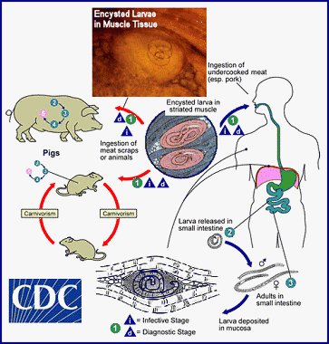动物肉类还常常含有很多寄生虫，因为畜类禽类所过的生活，都是很不卫生的。猪住在猪圈内，一身泥桨粪尿，吃的是残食与垃圾，又喜欢在泥潭中打滚，它一身染满了病菌，又从污秽泥泞中传染得到蛔虫病。吃猪肉是很可能把蛔虫卵吃进肚子的。猪牛肉也常有旋毛虫，那是潜伏在草地的泥土中的，它的幼虫随着草给动物吃进肚子，再进入了动物的小肠，转入活动最多的肌肉，例如牛舌头、牛腿肉、横膈膜、猪肠、猪肝……。吃猪肉、牛肉及其内脏，实在是很危险的事！因为旋毛虫能耐高热，不是一般烹饪温度所能杀死的。旋毛虫给吃进人体，那就不得了！除了旋毛虫、蛔虫，还有带虫等等寄生虫，都是有害于人体的。
水族之中，螃蟹常常会带有吸血丝虫，尤其著名的“大闸蟹”之类的淡水蟹，更常有血丝虫。喜欢吃蟹的人不知不觉就把血丝虫吃进胃肠内，血丝虫的耐热力很强，没有华氏一千多度以上的高热，不能杀死它，普通的烹饪温度很少高达三、四百度，根本就是替血丝虫洗热水澡而已。人把它吃进肠胃，它就侵入人的肺脏内，不久就使人咯血死亡。死了也还不知道是什么缘故呢？持螯赏菊，文人视为“雅事”，在我看来却是“蠢事”！螃蟹又腥又臭，又可能含有血丝虫（并非每一只都有，但是，谁敢担保没有？）再加上喝什么名酒，简直就是自杀！
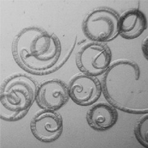有很多医学研究报告指出，河海中的鱼类及贝类，含有很高的辐射毒素，和水银、铅、镉、铜等等元素，对人类健康不利，又很多海产含有寄生虫与病菌。
野生动物及飞禽的疾病与寄生虫，比家畜家禽更多，广东老饕爱吃的“穿山甲”（Pangolin）──是一种食蚁兽，与犰狳同类──广东人视之为补品，殊不知穿山甲与犰狳，都是在泥土与蚁穴中感染了血丝虫与过滤病毒，这些都是煮不死烤不亡的，医学发不少病例，是吃了穿山甲而得血丝虫及过滤病毒致死的，况且食蚁兽的肉内含有太多蚁酸，也会使人中毒死亡！
野生的鹿和野猪、野鹅、野鸭、免子等等，都常常带有很多病菌与寄生虫，想一想看，鹅、鸭常常向污水泥淖中取食，那里面有多少的病菌与微生物！它们吞下了多少病菌与微生物寄生虫？别说化学污染了，烤鹅、烤鸭就是美味的毒药啊！
（五）肉是酸性食物是致癌之因
撇开这些别说，肉食可以使人的体液倾向于酸性，酸性体液是容易引起癌症的，这已经由日本的医学家以实验证实，而肉类的腐化所产生的毒药“尸毒”，也是很危险的。人类的小肠、十二指肠等消化吸收肉类的速度很慢，往往未消化完，而胃肠中的肉类已经发酵腐化了，使人吸收了尸毒！
腊肉、腌肉、香肠、罐头肉类等等，往往被加入了防腐剂，例如：Sodium Nitrate或者Diethyl Stilbestro或Arsenic等等，都是可能致癌的！
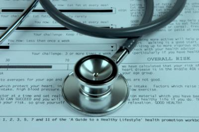从医学上的统计，得知盛产肉类的纽西兰、澳洲、美国与加拿大等以肉食为主的国家，患肠癌、直肠癌、乳癌、肝癌等等癌症的比例，高于缺乏肉食的国家，这也是很多提倡素食者所周知的了，用不着我再一一赘述。值得一提的是，富庶的台湾、香港居民与美、加华侨，患癌症的比例，也随着肉食享受而急增，直追纽、澳、美、加的白人社会了！当然，癌症很多是另有成因的，例如吸烟与喝酒（不在本文讨论之列）。假如既吃肉，又吸烟又喝酒，那更是“三料”自杀了！
（六）狮虎食肉多死于癌症
这里顺便回答几个问题，那就是：“为什么狮、虎等猛兽吃肉又长得那么好呢？”这是一种误解，以为狮、虎、狼、熊等吃肉都没事。其实，这些猛兽，很多是死于癌症的，只不过人们没注意到而已。野生的猛兽死亡原因当然不容易统计，但若就动物园的狮、虎而言，它们大多数是死于癌症或心脏病的，问问兽医就会知道了。就是一般家犬与家猫，也大多数死于癌症与心脏病，一般人不注意而已。但至少会知道，有时候会看到因吃了鸡骨而致胃癌死亡的狗儿吧？当狗儿呕吐挣扎之时，不妨请兽医它解剖诊看，你就会知道了！
（七）爱斯基摩人肉食多短命
也有人说：“北极圈的爱斯基摩人，天天吃生的海狗肉和鲸肉什么的，为什么没癌症呢？”这也是未经深入研究的说法。其实，爱斯基摩人，平均寿命很短，他们患癌症的比例也是高于一般美、加居民的，只不过他们很少出现在文明社会的医院，他们大多数都是自生自灭而已。根据曾经前往北极圈做巡回医疗的医生在电视上报告，爱斯基摩人患肠癌的比例，比外面的白人高了十倍，差不多每一个爱期基摩病人都是肠癌患者。由于缺乏常识医疗设备，他们又贫穷，不能往外就医，往往都是肠癌到了危险期才发现，为时已迟！但是，他们仍然不接受文明社会的膳食及医药，还是要猎吃鲸肉与海狗肉和鱼类，这是个濒于灭种的种族，是不可救药的了。
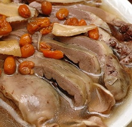反对素食者认为，素食营养不够，只有“肉食才有营养”，“吃鸡吃肉才有力气”，“吃牛肉才会长得强壮高大”，“吃猪肉才有足够的热能”，“吃海狗鞭、虎鞭就会壮阳”，中国人注意进补，吃什么肉类都以进补为重，这一类的错误观念，不知害死了多少人！其实强调肉食营养观念，是毫无医学常识的，是毫无医学根据的说法，只是道听途说，或者是从古老的传言得来的。
从现代医学看，上述的各种营养观念是毫无根据的，这里不妨浅谈一下。
首先觉得可笑的是“进补”的迷信，有人说孩子念书太辛苦，用脑太多，就给他吃牛脑猪脑，补一补。又有人说猪肺煮杏仁是补肺的，猪心补心脏，猪血、牛血补血，吃了海狗鞭、虎鞭、鹿茸，就可“生龙活虎”地“大展雄风”……那么，我反问一句：“吃了猪尾牛尾，岂不是长出一条尾巴来呢？吃了猪耳朵也就该长出猪耳朵了？吃了牛舌头岂不变了大舌头？吃了蛇肉就会蛇行了？吃了乌龟岂不也变成乌龟？吃了猪脑不就也要变成猪脑袋了吗？”
（八）植物性食物营养足够
从现代营养学来看，人体所最需要的营养，主要的是：蛋白质（生质）、脂肪、醣类、矿物质（微量元素）、维他命、水份。
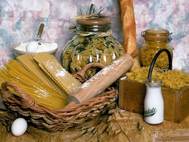蛋白质：植物豆类所含的植物性蛋白质，营养比动物性蛋白质完整而安全，而且较易被人类的肠胃消化吸收。肉类的蛋白质，所含酸性元素及尿素、嘌呤太多，有害人体，妨害人体细胞的酸堿平衡。而植物性蛋白质则较少酸性元素，黄豆及其它豆类制品，所提供的氨基酸与热量，都较等重的肉类?高，而且没有任何动物废物，与毒素病菌寄生虫等危害健康的物质存在其中。
醣类：主要来源是植物的碳水化合物。动物肉类所含醣类极少，光吃肉类不吃植物食物的人，就会缺乏醣类，引起肝病，或蛋白质中毒，引起肾脏病等等。
脂肪：动物肉类的脂肪百分之九十以上是饱和脂肪酸，使人体血管积聚沉淀胆固醇与脂肪而淤塞，发生高血压、中风、心脏病。但是，植物油所含饱和脂肪酸很少，它的非饱和性脂肪酸的维他命E很丰富，比动物脂肪更有益于健康。
矿物质（微量元素）：肉类所含矿物质不及植物的种子所含丰富，植物种子所含的钙、磷、铁、镁，比同重的肉类高得多；肉类所含的磷太多，而钙则不足，磷酸太多会使人体细胞中毒。植物种子与表皮所含的微量元素种类很多，而肉类则往往缺乏多样的微量元素。
维他命：肉类所含维他命量，远不及植物性的食物，肉类中没有维他命C，很少维他命B，很少维他命E，肉类中的肝类，所含维他命A很丰富，但又过分浓缩丰富了，过多就成为有毒，超过人体所能接受的量。所以，有人吃了过量的鱼肝油会中毒，但是植物菜蔬中就没有这种危险，动物肉类所含维他命Ｂ，亦不及植物食物的丰富。
水份：肉类含有的水份，均已有大量的尸毒、防腐剂、农药、杀虫剂、病菌等等的污染，洗不清，掸不掉，而植物蔬菜水果，虽然也有农药、杀虫剂、病菌等等的可能，却可以洗得干净，植物所提供的汁液是比肉类洁净的。
以上只是大概的简论，读者若有兴趣，可以多参考营养学的书，以获详细资料，多作比较，就会知道，肉类食物的营养，实远不如植物食物。
（九）出家人须注意营养均衡
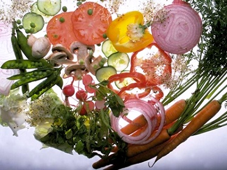至于有些出家人脸色发青，身体衰弱，有人认为是吃素营养不足所致。其实不是，只是他们不懂素食营养分配及平衡，或者是他们打坐太多，缺少运动，或者是吃来吃去都是几片白菜或卤菜，不吃别的。多年前，我去参观南亭老法师的寺院，看见出家人的午餐只有几片白菜，连豆腐都没有（现在可能已有改善了），还得“持午”，那么一天只吃几片菜叶子，一碗白米饭，怎能不变成营养不良呢？这样苦行，把身体弄坏了，怎样担当弘法度众的大任？我常主张，出家人应该注意平衡的营养及适当的运动与休息，别拼命苦行，否则，饿得变成衣索比亚饿民似的，就能弘法救世了吗？要有健康的身体才可以担当重任呀！我亦反对“过午不食”，那是造成许多出家人胃病的主因！差不多来找我看病的出家人，十个有九个是有胃病的。胃溃疡是最常见的出家病之一，我认为“过午不食”应改为“过午吃少一点”才较为合理！
总之，吃素的人，营养不良，完全是由于太偏食和吃得太少，不知道怎样去分配平衡的素食，并非凡是吃素就营养不良！来见过我母子的访客，都惊讶地看到家母满脸红润，健步如飞，毫无龙钟之态，我亦仍然貌如小孩，脸色红润，比一般吃肉的人壮健耐劳。我们的素食营养是平衡的，每天食谱，都是我亲自分配的。在我家吃过饭的人都知道，在素食上，我家的素菜全是最好的营养配合，虽然粗粝难以下咽，却是最丰富的营养，可说是享受逾于皇帝，这可不是自吹自擂，皇帝贵族，顶多是多吃肉多喝酒吧，哪有我家的菜根香之享受！
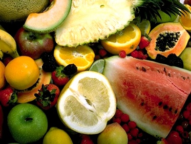的确，吃素要注意营养均衡，要懂得分配，不能天天只吃几片菜叶就算数，我不鼓励人人变成像我这样的素食享受者，但是，我认为要有强健的体魄才可以做事。我不是一个苦行的素食者，我认为过分的苦行毫无意义！与其做饿鬼，何如做一个壮健的弘法者！千万别误会我是主张人人每天只吃两片菜叶子，也别误会我是抨击寺院的苦行饮食制度。但是，那种苦行有什么好处呢？我主张出家人也得吃得够营养，吃得饱，锻炼体魄，为弘法大业而保重，不可误以为挨饿挨苦就可以成佛救世！在我看来，“过午不食”，“夜不倒单”，都是不合保健之道的！我才不修这种苦行呢！我是该吃的吃，该睡的睡，该动的动！我修的只是凡夫禅，可没有打算成佛，叫我每天少吃一点果子，我是不干的！
当然，我也反对吃富豪人家的那些豪华素筵！什么冬菇，什么“竹笙”等等名贵素菜，一顿素菜招待大法师，就耗费了数百元美金，那简直是浪费！名为素菜，却又都油腻得要命，又拼命放味精与酱油。有名的法师常常被宴请吃这些豪华素宴，吃多了怎么不得高血压、糖尿病呢？大法师来找我看病的，十居其九都是这两种病。在家人供养法师，若太豪华奢侈，非唯浪费，也还对法师健康有害啊！尤其是那些冬菇，与油炸的食品，都不是健康食品，这是素食中最不合卫生的东西！不能说素食就毫无缺点，缺点就是在于太讲究调味，味精太多，酱油太多，腌菜酱菜太多，这些是对健康不好的，不宜多吃！总之，吃素要懂得平衡营养，不可偏食！不可太少也不可太多！
我吃素全不用这些人造调味品，而且，我尽可能吃新鲜的蔬菜与生吃。平日饮食有度，不多不少，这就是我的秘方了。
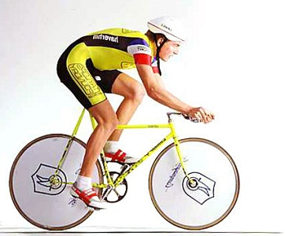（十）素食者体力较能持久
医学研究报告说，瑞士的医学营养专家以一批九位运动员做脚踏车耐力实验，发现光吃肉类之时，运动员踩脚踏的耐力是五十七分钟，但是，给予肉类与蔬菜各半时，耐力是一百四十分钟，给予全部素食时，他们竟可踩车一百六十七分钟之久！证明素食营养与热量比肉食更高，更能提供力量，因为素食者的肌肉能储存较高量的醣！
现代西方的运动家，在营养专家指导之下，大多数以素食为主食，很少吃肉了。世界的健美先生们，不太吃肉，多吃素食。长跑家、溜冰家、举重家，都以素食为主，尽量减少肉食，所以他们身体比常人好，耐力较强。西方新一代的青年人，很多知道了素食比肉食的营养高，所以素食运动越来越蓬勃，越来越多的西方青年人从肉食改为半素或全素了，可是，中国人很多仍然坚持素食营养不够！
聪明的人应该下点功夫，花点时间去详细研究肉食与素食的营养比较，作出明智的选择！舍开人道主义与佛教慈悲不谈，健康总是各人自己的重大关注！到底是否仍然贪馋吃肉去迎接癌症与各种危险疾病呢？抑或悬崖勒马，改为吃素以保健康平安？这就要看各人自己的决定了。
原载《天华》第124期：1989年09月1日
原载《天华》第125期：1989年10月1日
原载《天华》第126期：1989年11月1日
收录于《健康长寿释疑──吃肉的危险》